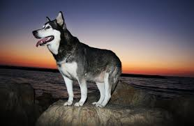

Training
Alaskan Malamutes are intelligent dogs and respond best to training that uses positive reinforcement, such as treats, praise, or toys. However, they are also very independent and may ignore commands if they don’t feel like listening. Because of this “selective hearing,” training a Malamute requires patience and consistency. Training should start early while the dog is still a puppy. Short, regular training sessions work better than long ones, because they keep the dog interested and focused. Basic commands like sit, stay, and come should be practiced often so the dog learns to listen reliably. Socialization is also important. Introducing a Malamute to different people, animals, and environments when they are young helps them grow into well-behaved adults. Keeping training fun and rewarding will help maintain their attention and build a strong bond between the dog and its owner.

Grooming
Alaskan Malamutes have thick double coats that keep them warm in cold weather, but they require regular grooming to stay healthy. Their coat should be brushed daily to remove dirt, reduce shedding, and spread natural oils that keep their skin healthy. They should also be bathed about every 6–8 weeks to keep their coat clean and prevent matting. Regular brushing helps control shedding, which can otherwise leave hair on furniture, carpets, and clothing. Their eyes should be checked daily for debris in the corners and gently wiped with a damp cloth if needed. Their ears should be checked once a week to make sure they are clean, pink, and free of buildup or infection. Ear wipes can be used to help keep them clean.
Nutrition
Alaskan Malamutes should be fed a dog food that is approved by the Association of American Feed Control Officials (AAFCO) so they get a complete and balanced diet. Adult Malamutes should eat two meals a day, while puppies should eat three meals a day. They should not be free-fed because they will often overeat, which can lead to obesity. Using a slow feeder bowl can help them eat more slowly. The amount of food a Malamute needs depends on factors like age, size, and activity level. Dog food bags usually have feeding guidelines, but a veterinarian can give the best recommendation for your specific dog. Their diet should also support joint, eye, and coat health. Supplements with omega-3 fatty acids and vitamin C can help keep an Alaskan Malamute healthy.